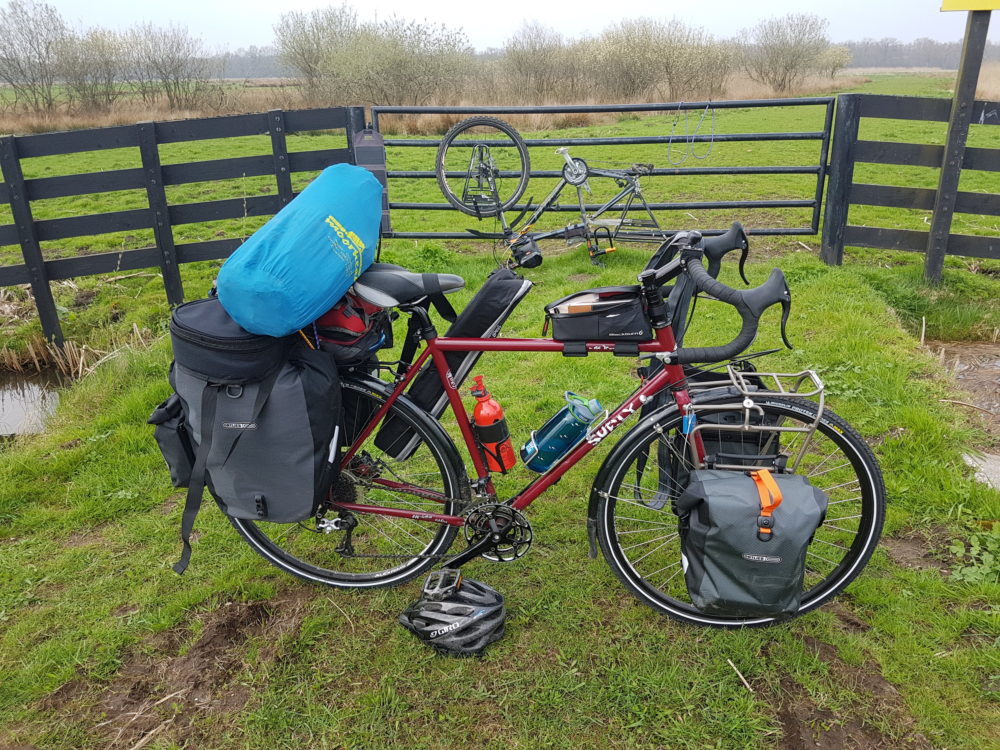
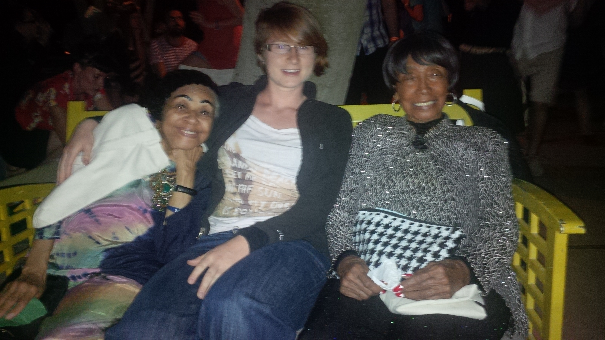
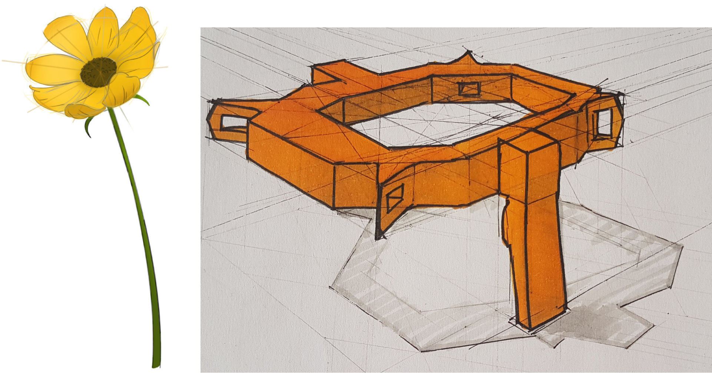
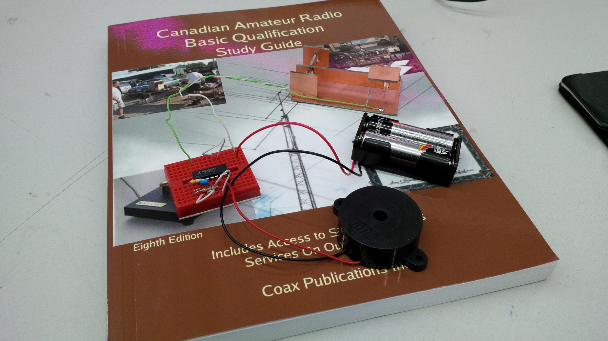

In 2016 I graduated with distinction from the Mechanical Engineering program at the University of British Columbia with a Mechatronics specialization, and I’ve held the Professional Engineer designation (and stamp!) since 2022.
I am currently living in the Netherlands, working with a group of creative, curious, nerdy, and forward-thinking people in the Embedded Software R&D department at ABB e-Mobility, where we’re crafting high quality low level code, writing control algorithms for pumps and fans, and testing and improving the thermal management of our portfolio of electric vehicle chargers.
I’m interested in automation and information organization – in instances where technology is applied to make something useful or meaningful in a clear and user-friendly way – and the structured, tight-knit, and energetic teams that live at this boundary between humanity and technology.
You can find me on LinkedIn; I’d love to discuss technical industry and applications with you, in English, steadily-improving Dutch, or even broken French or German.
Outside of engineering you might find me…




